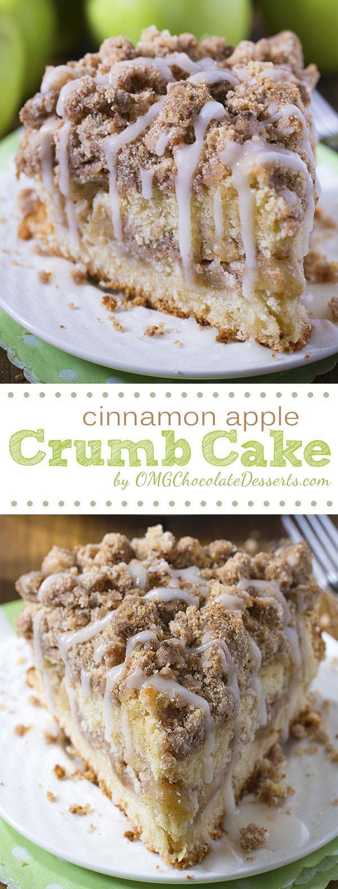

Cinnamon Apple Crumb Cake
Prep Time: 20 min
Cook Time: 40 min
Description
View the original website here
Are you ready for fall baking? Cinnamon Apple Crumb Cake is the perfect dessert for crisp weather coming up.
Ingredients
For cinnamon streusel crumb:
- 1 and 1/2 cups flour
- 1/2 cup brown sugar
- 1/4 cup granulated sugar
- 1/2 teaspoon salt
- 1 teaspoon cinnamon
- 1/4 teaspoon nutmeg
- 1/2 cup butter -melted
- 1/2 teaspoon vanilla
- 1 large (or 2 small) tart apples-peeled and chopped
For the cake:
- 4 Tablespoons butter
- 1/2 cup granulated sugar
- 1 large egg
- 1 teaspoon vanilla
- 1/2 cup sour cream
- 1 cup flour
- 1/4 teaspoon baking soda
- 1/4 teaspoon salt
- 1/2 teaspoon baking powder
Apple cider glaze:
- 1/2 cup powdered sugar
- 1 and 1/2 – 2 Tablespoons apple cider
Instructions
- Preheat the oven to 350 F. Grease 8 inch springform pan
and line the bottom with parchment paper, set aside.
- To make cinnamon streusel crumb, first in a bowl, whisk together dry ingredient.
Then add melted butter and vanilla and stir until the mixture is evenly moist, set aside, too.
- To make the cake in a large bowl, cream together 4 tbsp butter with 1/2 cup sugar until
light and fluffy, then add egg and beat well. Finally, add vanilla and sour cream and beat again.
- In another bowl, stir together 1 cup flour, baking soda, salt, and baking powder and add to
the butter mixture, stir until just combined.
- Spread half the batter at the bottom of the pan ( it will be very thin layer).
Spread the apple chunks evenly over the batter, then sprinkle about 1 cup of the cinnamon streusel crumbs over the apples.
Spread the remaining batter over the crumbs and on top spread the rest of the cinnamon streusel.
- Bake 35-40 minutes or until a tester inserted in the center comes out clean.
- Before remove the ring of springform pan run a thin knife around the cake.
- To make the glaze, whisk together powdered sugar with apple cider and drizzle over the cake.
Contact Me!